Serie mensual: 2015-01-01 a 2026-07-01 · 139 observaciones.
En las gráficas temporales, la franja gris indica el período de intervención: marzo de 2020 a junio de 2021.
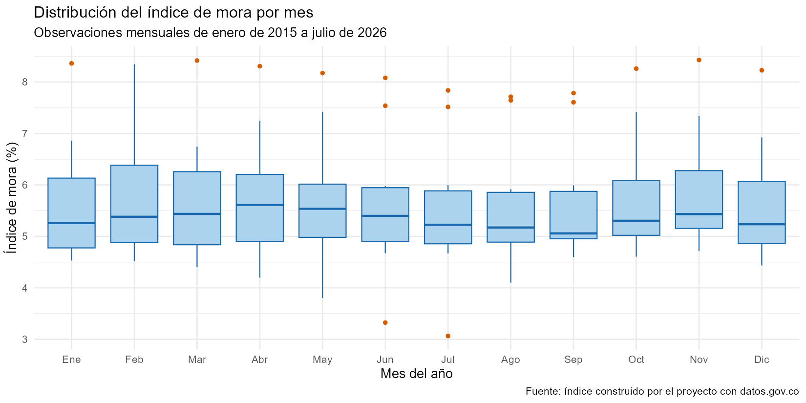
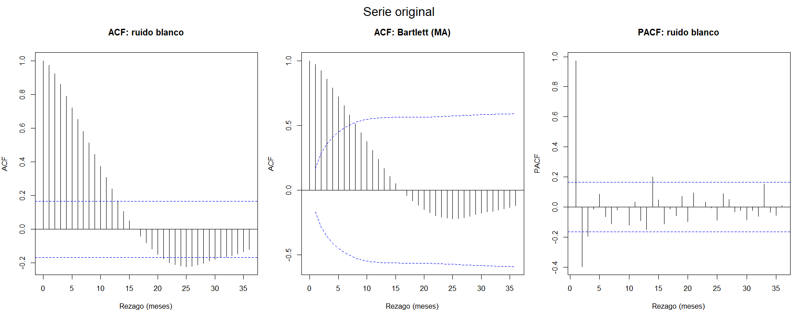
y(t) - y(t-1)
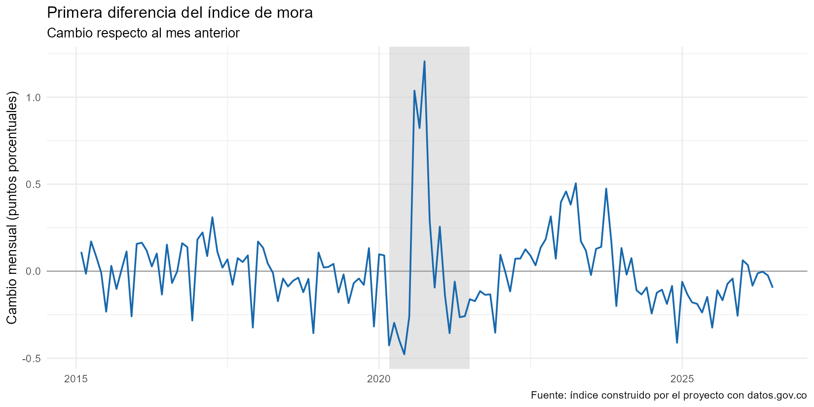
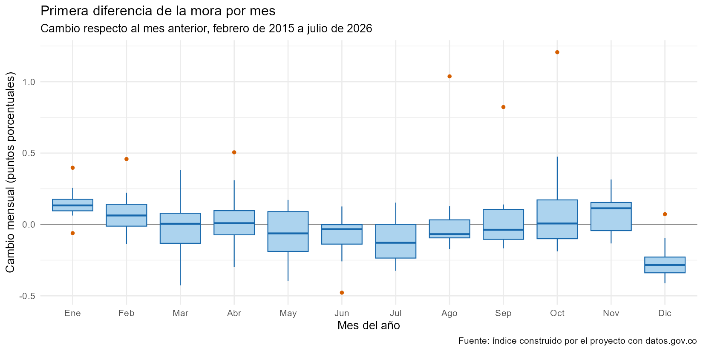
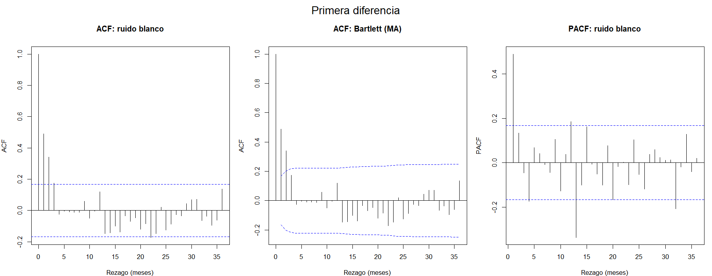
y(t) - y(t-12)
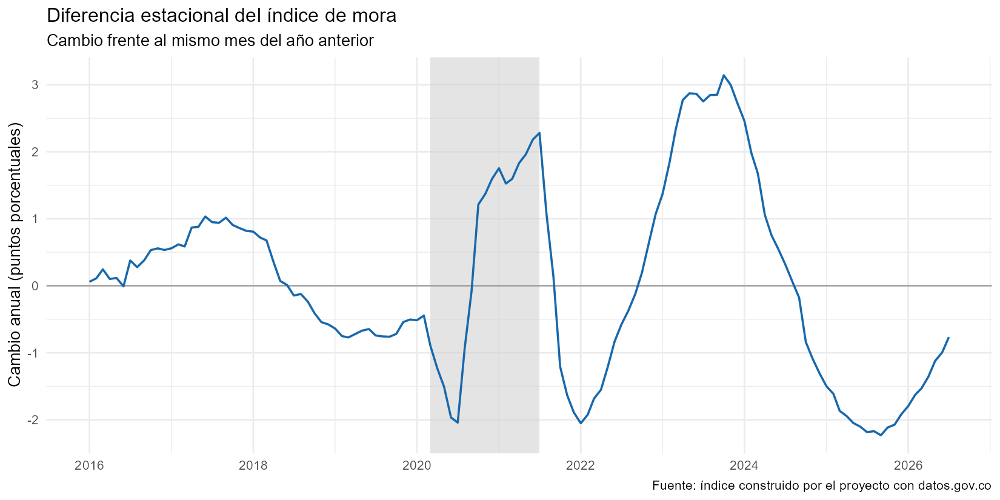
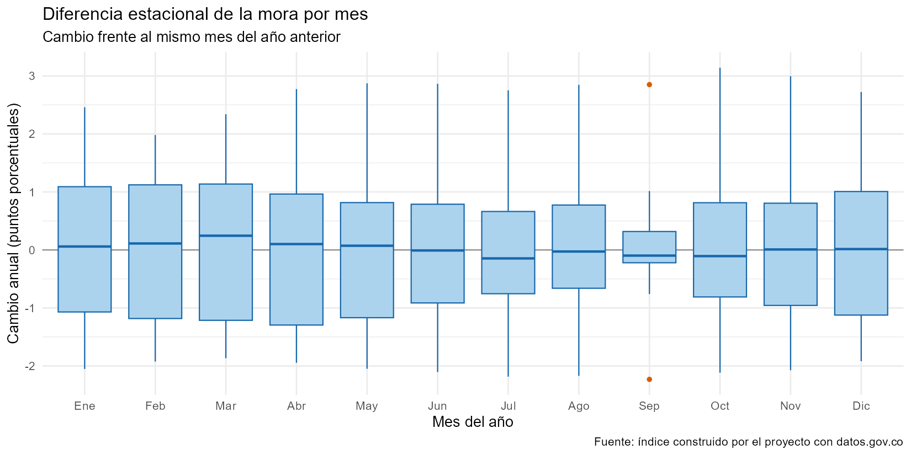
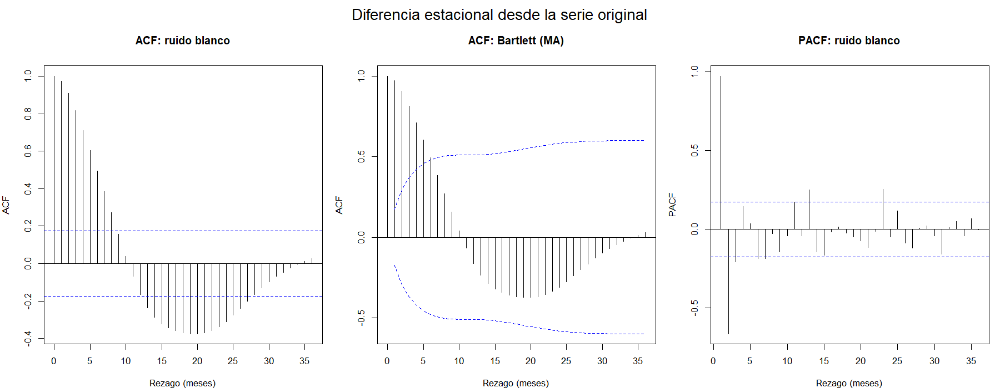
[y(t) - y(t-12)] - [y(t-1) - y(t-13)]
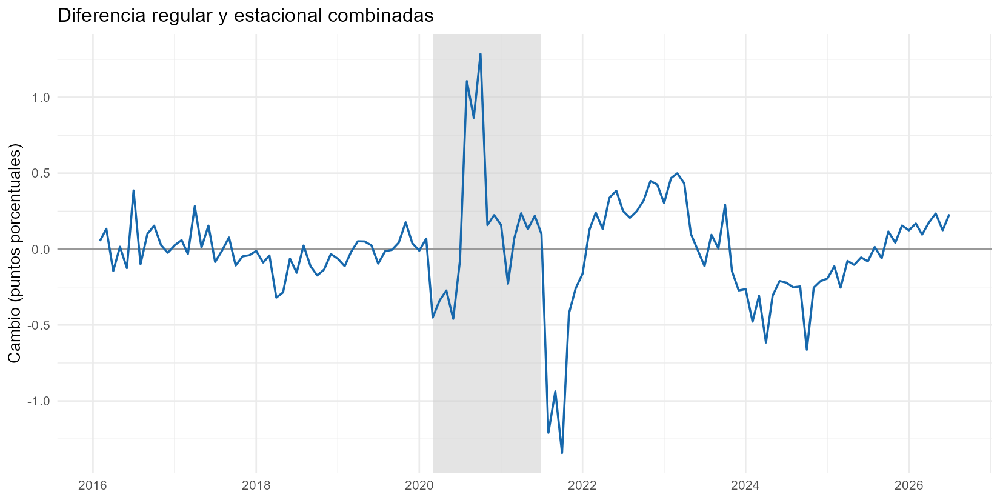
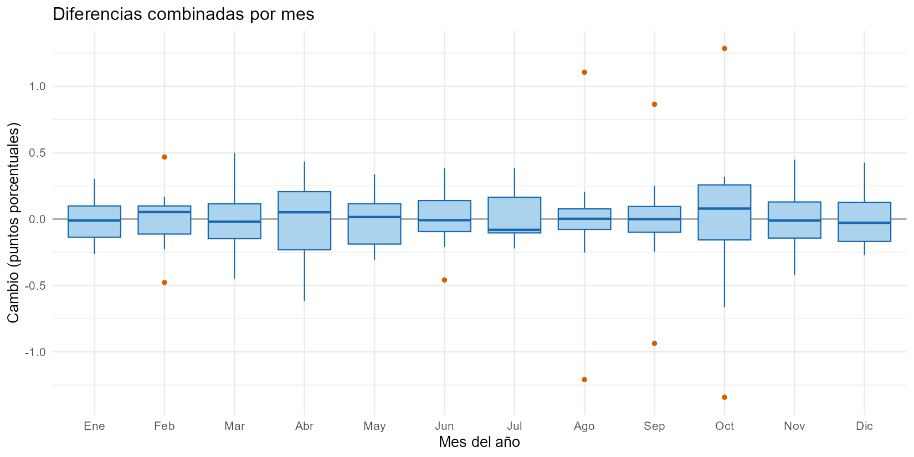
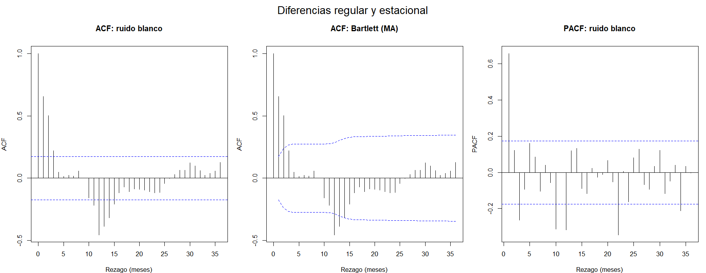
Bandas aproximadas al 95 %: ruido blanco y, en la ACF, Bartlett bajo un supuesto MA(k-1). Son referencias por rezago y dependen de sus supuestos.
Siguiendo el informe de referencia: varianza con divisor n, autocorrelación r1 y predicción 2 × varianza previa × (1 - r1 previa). La identidad corresponde a una diferencia regular y supone estacionariedad de la serie previa; se muestra como referencia aproximada. Cada transformación usa todas sus observaciones disponibles.
| Transformación | n | Varianza (n) | r1 | Identidad | Media |
|---|---|---|---|---|---|
| Original | 139 | 1.2736 | 0.9724 | — | 5.6640 |
| Primera diferencia | 138 | 0.0576 | 0.4892 | 0.0704 | 0.0024 |
| Diferencia estacional | 127 | 1.9957 | 0.9717 | — | 0.0417 |
| Diferencias regular y estacional | 126 | 0.1084 | 0.6567 | 0.1128 | -0.0066 |
En la fila combinada, la serie previa es la diferencia estacional. La cercanía entre identidad y varianza observada no demuestra estacionariedad: las diferencias de muestra y efectos de extremos también influyen.
Varianza muestral en el mismo período: 2016-02-01 a 2026-07-01 (126 observaciones). Unidades: puntos porcentuales al cuadrado.
| Serie | Varianza |
|---|---|
| Original | 1.3041 |
| Primera diferencia | 0.0619 |
| Diferencia estacional | 2.0276 |
| Diferencias regular y estacional | 0.1093 |
La varianza por sí sola no demuestra sobrediferenciación; se interpreta junto con la ACF y el contexto de la serie.
Modalidad consumo y ordinario. La gráfica muestra el período de la mora: 2015-01-01 a 2026-07-01 (139 observaciones). La tasa era trimestral hasta agosto de 2017 y el proyecto la representa mes a mes según su vigencia.
Esta tabla usa toda la tasa disponible desde 2007. Cada período reúne meses consecutivos con exactamente el mismo valor. Los períodos en los extremos pueden estar incompletos. Hasta agosto de 2017, la tasa tenía vigencia trimestral y se representó mensualmente.
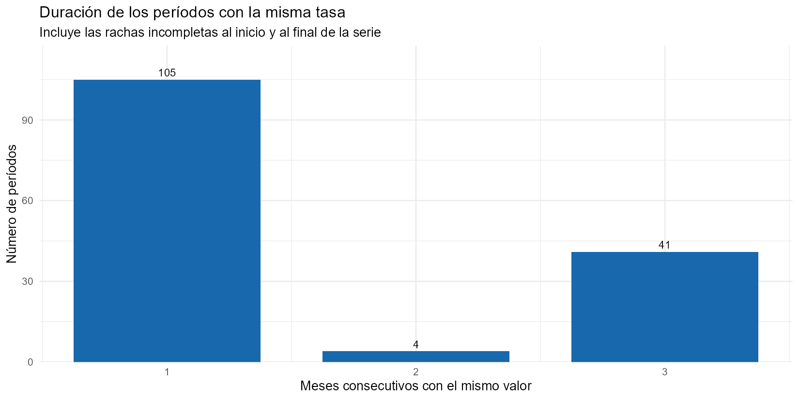
| Duración en meses | Número de períodos |
|---|---|
| 1 | 105 |
| 2 | 4 |
| 3 | 41 |
Para cada rezago k se compara la mora del mes t con la tasa del mes t-k, usando las series en sus niveles originales. Rezago 0 compara el mismo mes. Todos los rezagos usan los mismos meses de mora que el análisis de diferencias; para ello se usan tasas anteriores a 2015 cuando son necesarias. La correlación resume todo el período, no es una correlación móvil.
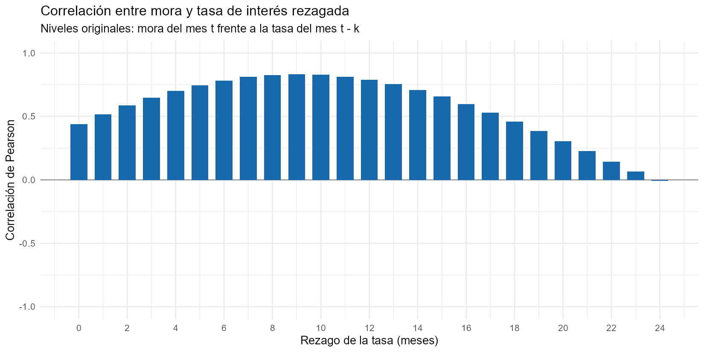
| Rezago (meses) | Correlación | Pares | Período de mora |
|---|---|---|---|
| 0 | 0.439 | 138 | 2015-02-01 a 2026-07-01 |
| 1 | 0.517 | 138 | 2015-02-01 a 2026-07-01 |
| 2 | 0.587 | 138 | 2015-02-01 a 2026-07-01 |
| 3 | 0.648 | 138 | 2015-02-01 a 2026-07-01 |
| 4 | 0.701 | 138 | 2015-02-01 a 2026-07-01 |
| 5 | 0.745 | 138 | 2015-02-01 a 2026-07-01 |
| 6 | 0.783 | 138 | 2015-02-01 a 2026-07-01 |
| 7 | 0.811 | 138 | 2015-02-01 a 2026-07-01 |
| 8 | 0.827 | 138 | 2015-02-01 a 2026-07-01 |
| 9 | 0.834 | 138 | 2015-02-01 a 2026-07-01 |
| 10 | 0.828 | 138 | 2015-02-01 a 2026-07-01 |
| 11 | 0.814 | 138 | 2015-02-01 a 2026-07-01 |
| 12 | 0.789 | 138 | 2015-02-01 a 2026-07-01 |
| 13 | 0.754 | 138 | 2015-02-01 a 2026-07-01 |
| 14 | 0.709 | 138 | 2015-02-01 a 2026-07-01 |
| 15 | 0.656 | 138 | 2015-02-01 a 2026-07-01 |
| 16 | 0.596 | 138 | 2015-02-01 a 2026-07-01 |
| 17 | 0.530 | 138 | 2015-02-01 a 2026-07-01 |
| 18 | 0.460 | 138 | 2015-02-01 a 2026-07-01 |
| 19 | 0.384 | 138 | 2015-02-01 a 2026-07-01 |
| 20 | 0.306 | 138 | 2015-02-01 a 2026-07-01 |
| 21 | 0.226 | 138 | 2015-02-01 a 2026-07-01 |
| 22 | 0.145 | 138 | 2015-02-01 a 2026-07-01 |
| 23 | 0.067 | 138 | 2015-02-01 a 2026-07-01 |
| 24 | -0.010 | 138 | 2015-02-01 a 2026-07-01 |
Las correlaciones de niveles pueden reflejar tendencias, persistencia y quiebres compartidos; no demuestran causalidad ni indican por sí solas que la tasa mejore el pronóstico.
Se compara el cambio mensual de la mora en t con el cambio mensual de la tasa en t-k. Para cada rezago se usan los mismos 138 meses de mora: 2015-02-01 a 2026-07-01. Se utilizan tasas anteriores a 2015 cuando el rezago lo requiere.
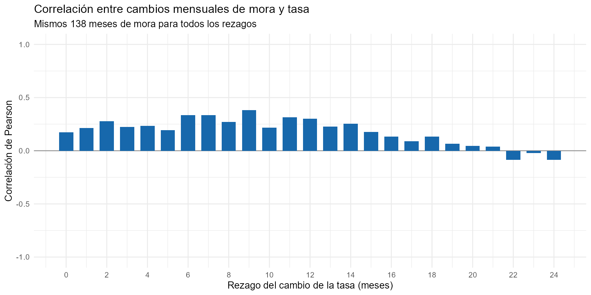
| Rezago (meses) | Correlación | Pares |
|---|---|---|
| 0 | 0.173 | 138 |
| 1 | 0.213 | 138 |
| 2 | 0.279 | 138 |
| 3 | 0.224 | 138 |
| 4 | 0.235 | 138 |
| 5 | 0.194 | 138 |
| 6 | 0.333 | 138 |
| 7 | 0.335 | 138 |
| 8 | 0.271 | 138 |
| 9 | 0.381 | 138 |
| 10 | 0.218 | 138 |
| 11 | 0.313 | 138 |
| 12 | 0.303 | 138 |
| 13 | 0.228 | 138 |
| 14 | 0.254 | 138 |
| 15 | 0.177 | 138 |
| 16 | 0.134 | 138 |
| 17 | 0.090 | 138 |
| 18 | 0.134 | 138 |
| 19 | 0.066 | 138 |
| 20 | 0.046 | 138 |
| 21 | 0.038 | 138 |
| 22 | -0.086 | 138 |
| 23 | -0.021 | 138 |
| 24 | -0.084 | 138 |
Se incluyen los meses de pandemia. Estas correlaciones son exploratorias y no prueban causalidad.
El informe oficial marca marzo de 2020 a junio de 2021 como período de alivios. Se excluyen esos meses de mora y también julio de 2021, pues su primera diferencia usa junio. Quedan 121 meses de mora, iguales en ambas comparaciones y todos los rezagos.
Se calculan primero las diferencias entre meses consecutivos de la serie original y luego se excluyen los meses indicados. Las tasas rezagadas se conservan aunque su fecha caiga en el período de intervención; los rezagos siguen el calendario real.
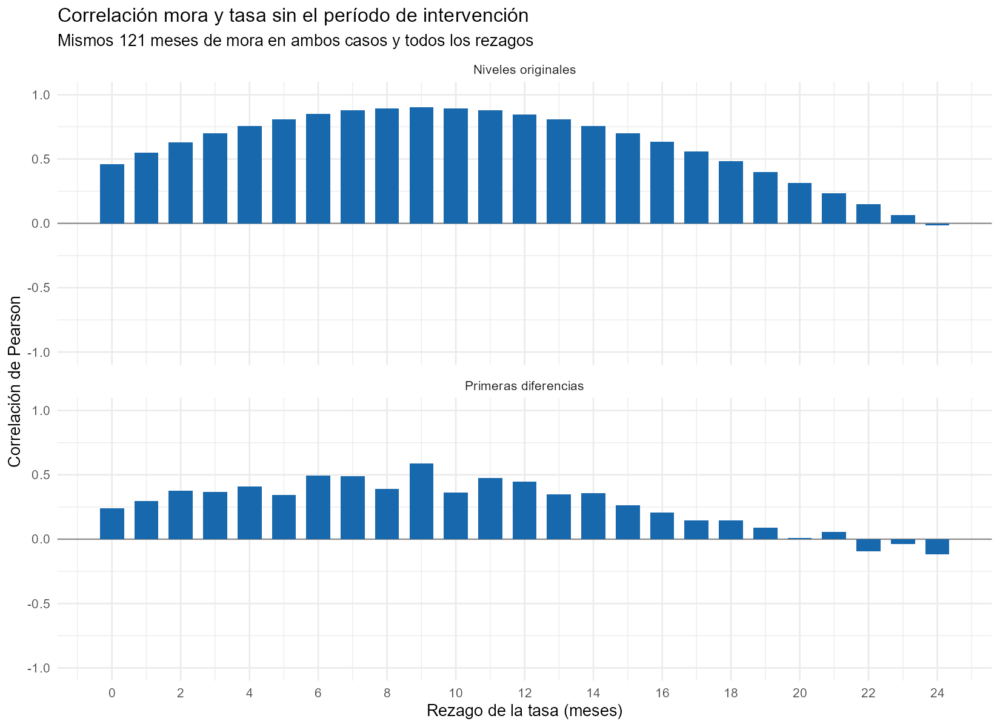
| Rezago | Niveles | Primeras diferencias |
|---|---|---|
| 0 | 0.462 | 0.241 |
| 1 | 0.550 | 0.295 |
| 2 | 0.630 | 0.375 |
| 3 | 0.699 | 0.368 |
| 4 | 0.759 | 0.408 |
| 5 | 0.808 | 0.342 |
| 6 | 0.849 | 0.494 |
| 7 | 0.878 | 0.490 |
| 8 | 0.894 | 0.392 |
| 9 | 0.901 | 0.588 |
| 10 | 0.894 | 0.361 |
| 11 | 0.877 | 0.476 |
| 12 | 0.848 | 0.449 |
| 13 | 0.808 | 0.350 |
| 14 | 0.758 | 0.357 |
| 15 | 0.698 | 0.263 |
| 16 | 0.632 | 0.205 |
| 17 | 0.559 | 0.147 |
| 18 | 0.482 | 0.148 |
| 19 | 0.401 | 0.089 |
| 20 | 0.316 | 0.007 |
| 21 | 0.232 | 0.058 |
| 22 | 0.147 | -0.095 |
| 23 | 0.066 | -0.038 |
| 24 | -0.014 | -0.119 |
Es una exploración con observaciones omitidas, no un modelo de intervención. No demuestra causalidad.
Antes: febrero de 2015 a febrero de 2020 (61 meses de mora). Después: agosto de 2021 a julio de 2026 (60 meses). En cada período se usan los mismos meses de mora para todos los rezagos y ambas transformaciones. Julio de 2021 se excluye porque su primera diferencia depende de junio.
Las tasas rezagadas se toman de sus fechas reales, que pueden estar fuera del período de mora, incluso durante la intervención. Las diferencias se calculan antes de segmentar. Las correlaciones resumen cada período completo; no son correlaciones móviles ni prueban causalidad.
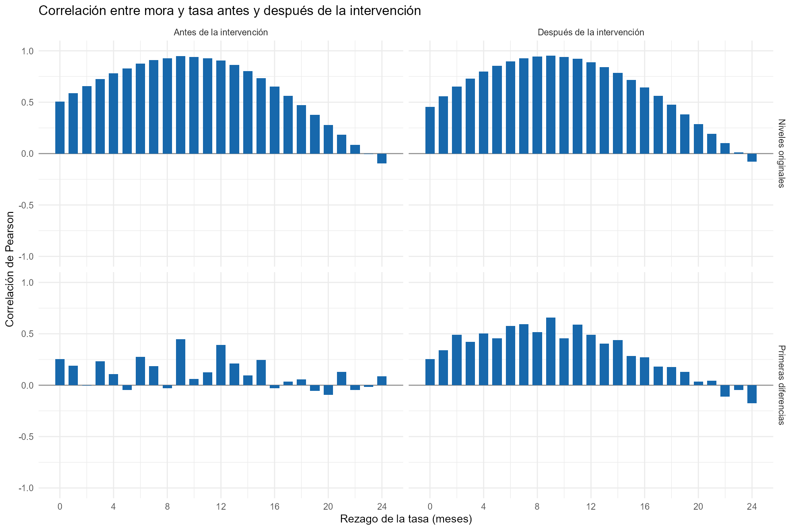
| Período de mora | Rezago | Pares | Niveles | Primeras diferencias |
|---|---|---|---|---|
| Antes de la intervención | 0 | 61 | 0.508 | 0.254 |
| Antes de la intervención | 1 | 61 | 0.587 | 0.188 |
| Antes de la intervención | 2 | 61 | 0.656 | -0.004 |
| Antes de la intervención | 3 | 61 | 0.725 | 0.234 |
| Antes de la intervención | 4 | 61 | 0.780 | 0.107 |
| Antes de la intervención | 5 | 61 | 0.827 | -0.048 |
| Antes de la intervención | 6 | 61 | 0.877 | 0.278 |
| Antes de la intervención | 7 | 61 | 0.909 | 0.184 |
| Antes de la intervención | 8 | 61 | 0.927 | -0.028 |
| Antes de la intervención | 9 | 61 | 0.947 | 0.446 |
| Antes de la intervención | 10 | 61 | 0.939 | 0.061 |
| Antes de la intervención | 11 | 61 | 0.927 | 0.124 |
| Antes de la intervención | 12 | 61 | 0.907 | 0.390 |
| Antes de la intervención | 13 | 61 | 0.863 | 0.211 |
| Antes de la intervención | 14 | 61 | 0.802 | 0.097 |
| Antes de la intervención | 15 | 61 | 0.735 | 0.246 |
| Antes de la intervención | 16 | 61 | 0.653 | -0.030 |
| Antes de la intervención | 17 | 61 | 0.563 | 0.033 |
| Antes de la intervención | 18 | 61 | 0.472 | 0.057 |
| Antes de la intervención | 19 | 61 | 0.377 | -0.057 |
| Antes de la intervención | 20 | 61 | 0.276 | -0.093 |
| Antes de la intervención | 21 | 61 | 0.184 | 0.128 |
| Antes de la intervención | 22 | 61 | 0.086 | -0.045 |
| Antes de la intervención | 23 | 61 | -0.006 | -0.018 |
| Antes de la intervención | 24 | 61 | -0.096 | 0.088 |
| Después de la intervención | 0 | 60 | 0.456 | 0.254 |
| Después de la intervención | 1 | 60 | 0.558 | 0.341 |
| Después de la intervención | 2 | 60 | 0.651 | 0.489 |
| Después de la intervención | 3 | 60 | 0.731 | 0.423 |
| Después de la intervención | 4 | 60 | 0.798 | 0.505 |
| Después de la intervención | 5 | 60 | 0.853 | 0.455 |
| Después de la intervención | 6 | 60 | 0.898 | 0.576 |
| Después de la intervención | 7 | 60 | 0.928 | 0.594 |
| Después de la intervención | 8 | 60 | 0.946 | 0.517 |
| Después de la intervención | 9 | 60 | 0.952 | 0.657 |
| Después de la intervención | 10 | 60 | 0.942 | 0.454 |
| Después de la intervención | 11 | 60 | 0.921 | 0.589 |
| Después de la intervención | 12 | 60 | 0.887 | 0.491 |
| Después de la intervención | 13 | 60 | 0.841 | 0.405 |
| Después de la intervención | 14 | 60 | 0.785 | 0.440 |
| Después de la intervención | 15 | 60 | 0.718 | 0.283 |
| Después de la intervención | 16 | 60 | 0.644 | 0.273 |
| Después de la intervención | 17 | 60 | 0.562 | 0.183 |
| Después de la intervención | 18 | 60 | 0.475 | 0.177 |
| Después de la intervención | 19 | 60 | 0.383 | 0.131 |
| Después de la intervención | 20 | 60 | 0.288 | 0.033 |
| Después de la intervención | 21 | 60 | 0.195 | 0.043 |
| Después de la intervención | 22 | 60 | 0.101 | -0.113 |
| Después de la intervención | 23 | 60 | 0.010 | -0.045 |
| Después de la intervención | 24 | 60 | -0.078 | -0.177 |
Ejemplo didáctico con datos de enero de 2015 a diciembre de 2023: cuatro modelos de regresión con errores ARIMA(1,1,0), ajustados por máxima verosimilitud. La intervención vale 1 entre marzo de 2020 y junio de 2021. La tasa se incorpora con rezago de nueve meses.
En los cuatro casos el error satisface:
$$(1-\phi B)(1-B)\eta_t=\varepsilon_t$$Las ecuaciones de regresión comparadas son:
$$\begin{aligned}\text{Base:}&\quad y_t=\eta_t,\\ \text{Intervención:}&\quad y_t=\beta_I I_t+\eta_t,\\ \text{Tasa:}&\quad y_t=\beta_T x_{t-9}+\eta_t,\\ \text{Ambas:}&\quad y_t=\beta_I I_t+\beta_T x_{t-9}+\eta_t.\end{aligned}$$| Modelo | AIC | Coeficientes |
|---|---|---|
| Base | -9.89 | ar1 = 0.4835 |
| Intervención | -9.41 | ar1 = 0.4912; intervencion = -0.1772 |
| Tasa rezagada 9 meses | -15.33 | ar1 = 0.4554; tasa_9_meses = 0.1871 |
| Intervención y tasa | -15.16 | ar1 = 0.4642; intervencion = -0.1896; tasa_9_meses = 0.1902 |
La diferencia se aplica al error de regresión: en niveles, mora = intervención + tasa rezagada + error ARIMA. En estos modelos no se han incluido términos estacionales ni se han diagnosticado los residuos; las cifras son exploratorias, no constituyen una selección. El rezago 9 se sugirió con la muestra completa: para evaluar pronósticos debe seleccionarse nuevamente sin usar datos futuros.
Notación: yt es la mora, xt-9 la tasa rezagada nueve meses y B el operador de rezago. Las ecuaciones se muestran con MathJax y requieren conexión a internet.
Regresión por mínimos cuadrados de la mora en niveles frente a la tasa de nueve meses antes, con intercepto. Entrenamiento de enero de 2015 a diciembre de 2023, incluido el período sombreado; sin intervención explícita ni términos estacionales. No se impone una estructura AR a los residuos.
Mora(t) = -0.6218 + 0.3018 × tasa(t-9) + e(t). Los coeficientes son descriptivos; la dependencia y la posible no estacionariedad limitan su inferencia.
$$y_t=\alpha+\beta x_{t-9}+e_t,\qquad \widehat e_t=y_t-\widehat\alpha-\widehat\beta x_{t-9}$$ $$\widehat y_t=-0.6218+0.3018 x_{t-9},\qquad \Delta\widehat e_t=\Delta y_t-\widehat\beta\,\Delta x_{t-9}$$Luego calculamos Δe(t) = e(t) - e(t-1), con los mismos coeficientes de la regresión original. Por álgebra, Δe(t) = Δmora(t) - β × Δtasa(t-9). No se vuelve a estimar la regresión sobre diferencias.
ACF en el rezago 1: 0.913 para los residuos y 0.456 para sus primeras diferencias.
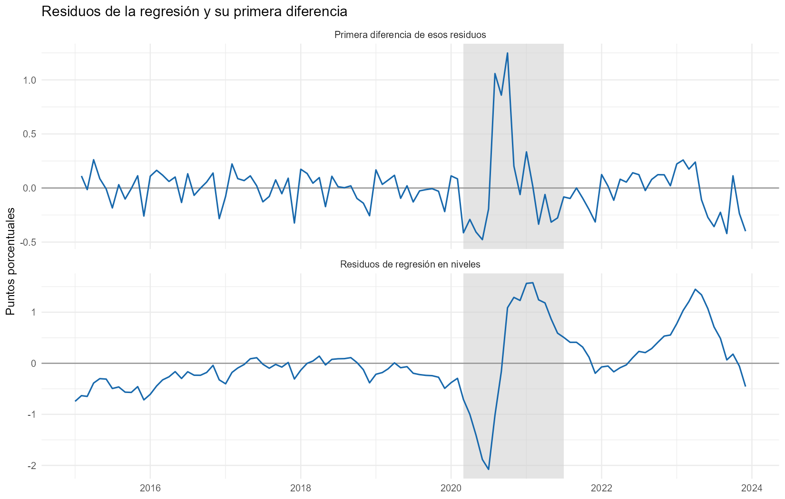
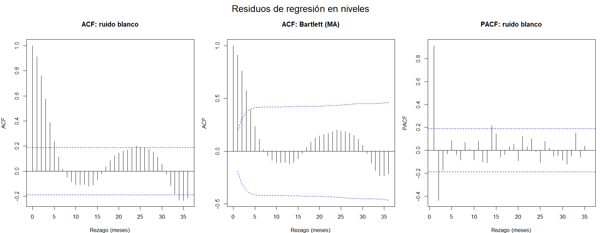
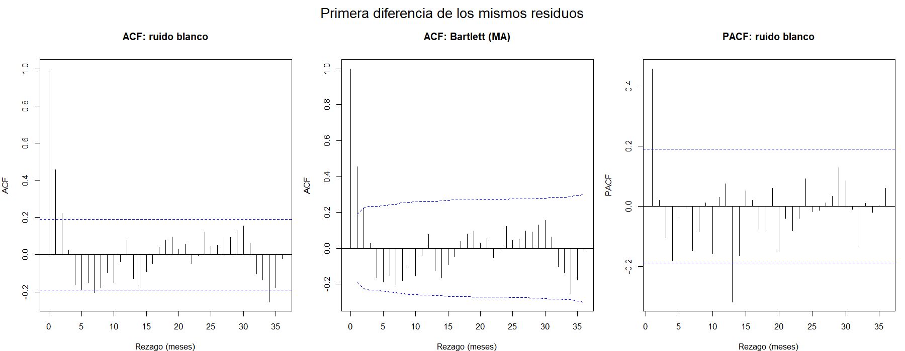
Las bandas son referencias aproximadas para series observadas; no constituyen pruebas exactas después de estimar la regresión. La intervención y las tendencias pueden afectar los correlogramas.
Se ajustan conjuntamente la regresión y el AR(1): mora(t) = β tasa(t-9) + η(t), u(t) = Δη(t), u(t) = φ u(t-1) + ε(t). Los coeficientes pueden cambiar respecto a la regresión inicial. No se incluyen intervención ni términos estacionales.
Estimaciones: β = 0.1871; φ = 0.4554. Las innovaciones se obtienen del ajuste de R; se omite la primera por la inicialización.
$$y_t=\beta_T x_{t-9}+\eta_t,\qquad (1-\phi B)(1-B)\eta_t=\varepsilon_t$$ $$y_t=0.1871\,x_{t-9}+\eta_t,\qquad \Delta\eta_t=0.4554\,\Delta\eta_{t-1}+\varepsilon_t$$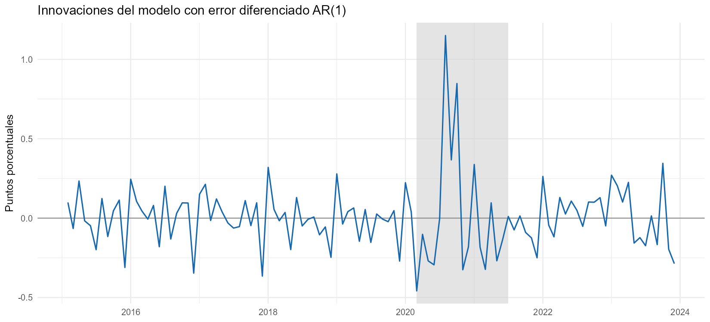
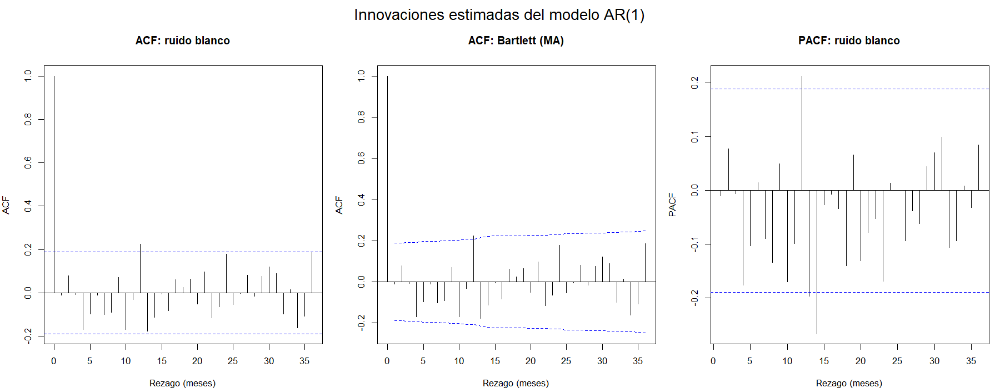
ACF rezago 1 = -0.010; rezago 12 = 0.223. Ljung-Box hasta rezago 24: Q = 33.483, 23 grados de libertad aproximados (descontado un parámetro AR), valor p = 0.0730. Bandas y prueba son aproximadas y se interpretan con cautela por el regresor estimado, selección del rezago y período de intervención.
Regresión en niveles: mora(t) = beta × tasa(t-9) + b1 × caída(t) + b2 × rebote(t) + error(t), con primera diferencia del error modelada como AR(1). La rampa de caída crece de marzo a julio de 2020 y permanece en 5; la del rebote crece de agosto de 2020 a enero de 2021 y permanece en 6. Así el efecto total posterior queda constante, no se fuerza a cero. Fechas elegidas exploratoriamente.
Coeficientes: tasa 0.1879; caída -0.4043; rebote 0.6006; AR(1) 0.2901. AIC sin rampas -15.33; con rampas -56.69.
$$y_t=\beta_T x_{t-9}+\beta_C C_t+\beta_R R_t+\eta_t,\qquad (1-\phi B)(1-B)\eta_t=\varepsilon_t$$ $$y_t=0.1879\,x_{t-9}-0.4043\,C_t+0.6006\,R_t+\eta_t,\qquad \Delta\eta_t=0.2901\,\Delta\eta_{t-1}+\varepsilon_t$$ $$C_t=\min\{5,\max(0,t-t_{\mathrm{feb 2020}})\},\qquad R_t=\min\{6,\max(0,t-t_{\mathrm{jul 2020}})\}$$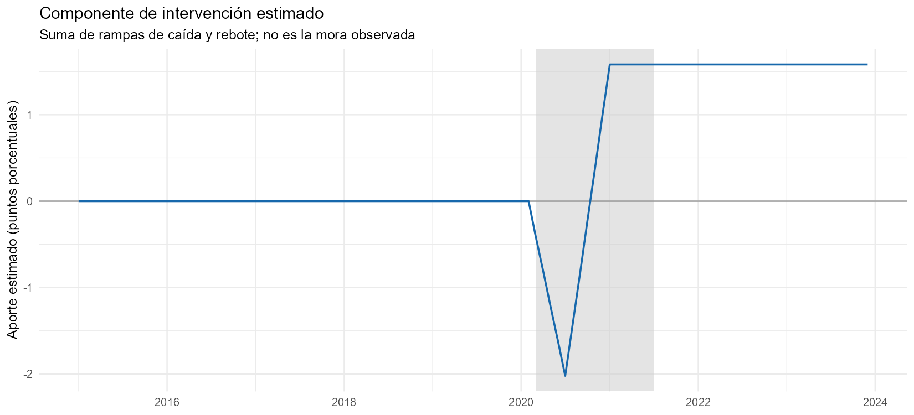
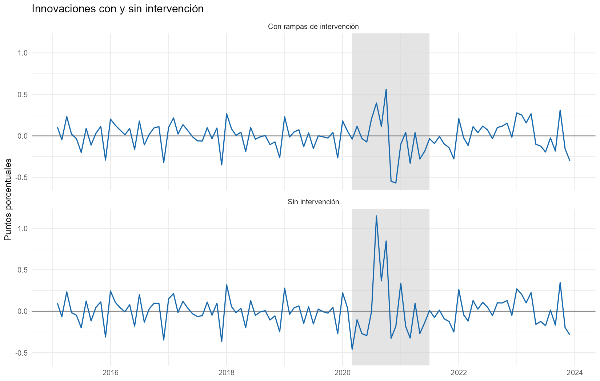
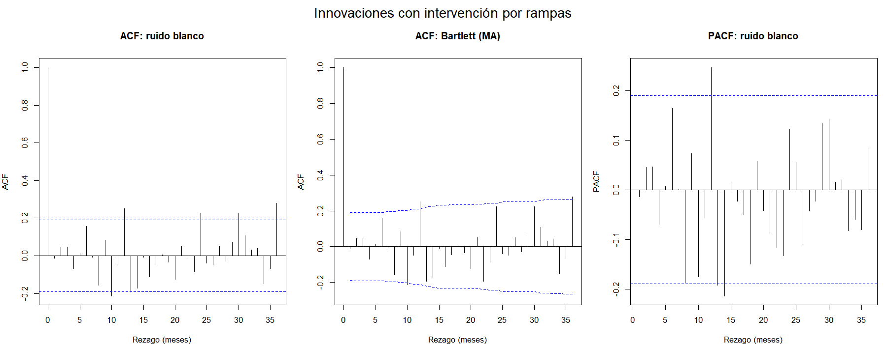
| Modelo | ACF 1 | ACF 12 | Ljung-Box Q(24) | p aproximado |
|---|---|---|---|---|
| Sin intervención | -0.010 | 0.223 | 33.483 | 0.0730 |
| Rampas | -0.014 | 0.250 | 47.210 | 0.0021 |
La prueba usa 23 grados de libertad aproximados (24 rezagos menos un parámetro AR); la estimación de regresores y la selección exploratoria limitan la interpretación de sus valores p. La gráfica de intervención es una contribución condicionada al modelo, no un efecto causal demostrado.
Se mantiene la tasa rezagada nueve meses, las dos rampas, una diferencia regular y el AR(1), y se agrega un MA estacional de período 12. No se aplica diferencia estacional. Error: (1 - phi B)(1 - B) eta(t) = (1 + Theta B^12) epsilon(t). La misma muestra se utiliza en ambos modelos.
Estimaciones: AR(1) 0.3577; MA estacional 0.2703; tasa 0.1638; caída -0.3559; rebote 0.6359.
$$y_t=\beta_T x_{t-9}+\beta_C C_t+\beta_R R_t+\eta_t,\qquad (1-\phi B)(1-B)\eta_t=(1+\Theta B^{12})\varepsilon_t$$ $$y_t=0.1638\,x_{t-9}-0.3559\,C_t+0.6359\,R_t+\eta_t$$ $$(1-0.3577B)(1-B)\eta_t=(1+0.2703B^{12})\varepsilon_t$$| Modelo | AIC | ACF 1 | ACF 12 | Q(24) | p aproximado |
|---|---|---|---|---|---|
| Rampas, sin MA estacional | -56.69 | -0.014 | 0.250 | 47.210 | 0.0021 |
| Rampas y MA estacional | -61.78 | -0.037 | 0.039 | 32.246 | 0.0733 |
Ljung-Box: hasta 24 rezagos, con 23 grados de libertad aproximados para el modelo anterior y 22 para el modelo estacional. Las bandas y valores p son aproximados: se estimaron regresores y se eligieron formas y rezagos de manera exploratoria.
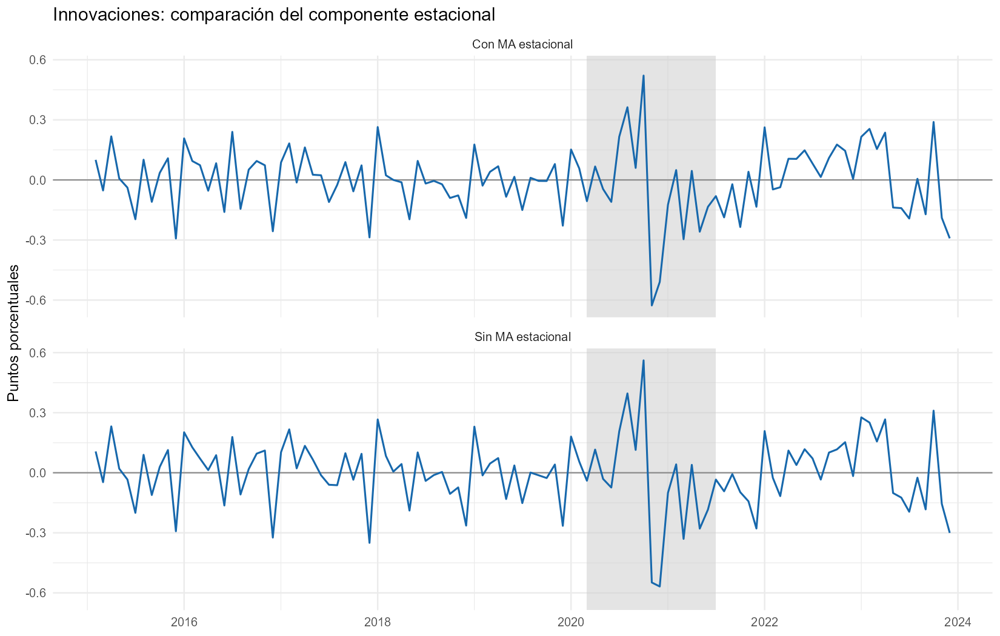
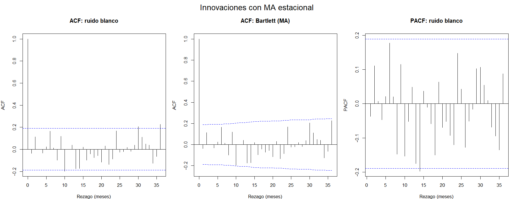
Se comparan las mismas observaciones, tasa, rampas, diferencia regular y AR(1); el segundo modelo añade un MA estacional. K incluye los coeficientes estimados y la varianza de innovaciones. n es el tamaño efectivo usado por la función de verosimilitud después de diferenciar. AICc agrega una corrección por tamaño de muestra; BIC penaliza de otra forma la complejidad. Menor es mejor dentro de esta comparación.
| Modelo | n efectivo | Parámetros K | AIC | AICc | BIC |
|---|---|---|---|---|---|
| Sin MA estacional | 107 | 5 | -56.69 | -56.10 | -43.33 |
| Con MA estacional | 107 | 6 | -61.78 | -60.94 | -45.74 |
Los criterios y diagnósticos de residuos no garantizan ausencia de sobreajuste. Las fechas de intervención y el rezago de tasa fueron elegidos exploratoriamente; aún debe evaluarse con pronósticos fuera de muestra.
La línea azul es la mora observada y la línea naranja es el ajuste de un paso dentro de la muestra. Para cada mes el ajuste utiliza información previa y parámetros estimados con toda la muestra de entrenamiento. Se omite la primera observación por inicialización. Las fechas de intervención se sombrean en gris.
La cercanía visual dentro de muestra no es una evaluación de pronósticos fuera de muestra.